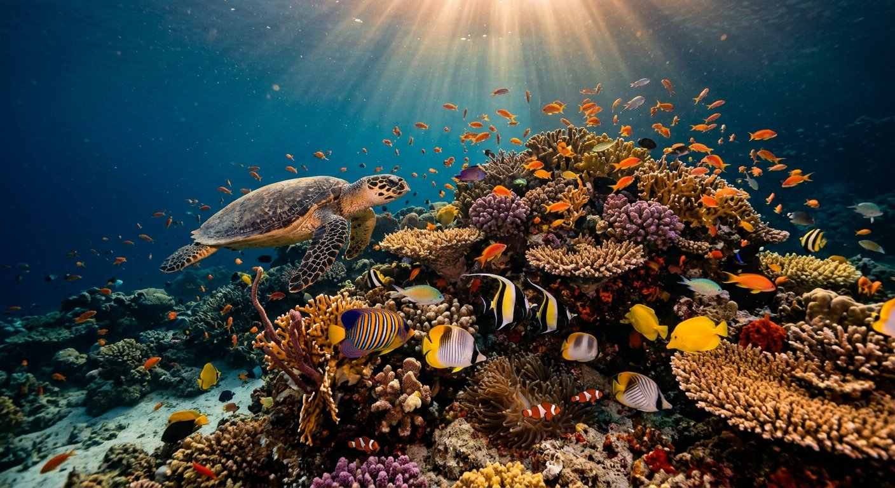
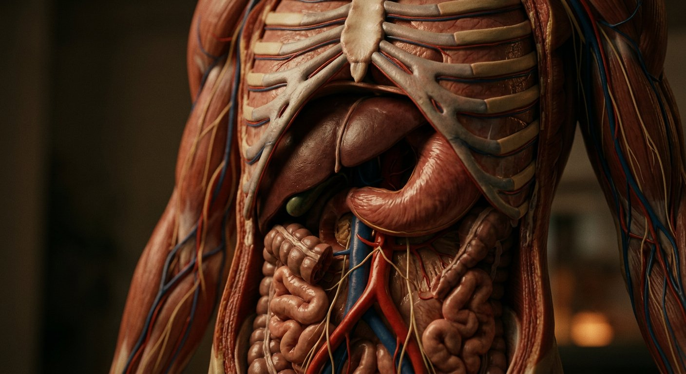
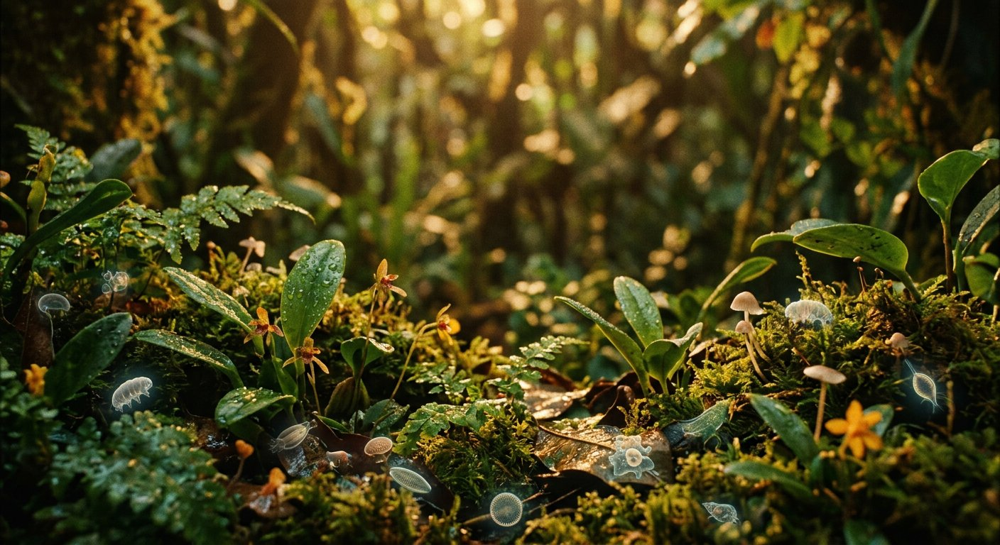

Aile III
Le Cabinet des merveilles
Ce que l'homme admire, et qu'il cherche à copier. Chaque mécanisme du vivant est un brevet dont l'auteur se devine — et chaque fiche est adossée à une étude primaire.
Lire la transcription
Le Cabinet des merveilles rassemble huit galeries consacrées aux mécanismes du vivant. Ce ne sont pas des curiosités : ce sont des solutions d'ingénierie que l'industrie s'en inspire aujourd'hui, souvent avec des années de retard, et que la biologie avait résolues depuis des millions d'années. L'ATP synthase est le premier exemple, présente dans chaque cellule vivante, et dont le principe de rotation est aujourd'hui au cœur de la recherche sur les piles à combustible. Le système de Flagelle est le second : un rotor nanotique, à une rotation de plusieurs centaines de tours par seconde, dont le mécanisme a été décrit par Tonisi et ses collaborateurs en deux mille treize. La cicatrisation, la photosynthèse, l'écho-location, l'orientation magnétique : chacune de ces huit galeries suit la même méthode. D'abord le mécanisme, décrit et daté. Ensuite l'application humaine, établie. Enfin la question honnête, celle qui reste ouverte.
Inventaire
Huit galeries
Ce que l'homme admire, et qu'il cherche à copier. Chaque mécanisme du vivant est un brevet dont l'auteur se devine — et chaque fiche est adossée à une étude primaire.
 Galerie 23
Les systèmes du vivant
16 fiches fiches
« Que tes œuvres sont nombreuses, ô Jéhovah! Tu les as toutes faites avec sagesse. » — Psaume 104:24
Galerie 24
Les oiseaux du ciel
12 fiches fiches
« Les oiseaux du ciel, qui volent au-dessus de vous. » — Matthieu 6:26
Galerie 25
Insectes et araignées
14 fiches fiches
« Va, Fourmis, tes forces; Demoiselle des fourmis, consider… » — Proverbes 30:24-28
Galerie 23
Les systèmes du vivant
16 fiches fiches
« Que tes œuvres sont nombreuses, ô Jéhovah! Tu les as toutes faites avec sagesse. » — Psaume 104:24
Galerie 24
Les oiseaux du ciel
12 fiches fiches
« Les oiseaux du ciel, qui volent au-dessus de vous. » — Matthieu 6:26
Galerie 25
Insectes et araignées
14 fiches fiches
« Va, Fourmis, tes forces; Demoiselle des fourmis, consider… » — Proverbes 30:24-28

Galerie 26 La vie des eaux 13 fiches fiches « Y a-t-il des poissons dans la mer…? » — Psaume 104:25
Galerie 27 Le corps humain en détail 12 fiches fiches « Je te rends admirable et ton corps; ta forme est admirable. » — Psaume 139:14 Galerie 28 Les animaux de la terre 11 fiches fiches « Demande aux bêtes, et elles t'enseigneront. » — Job 12:7 Galerie 29 Reptiles et amphibiens 10 fiches fiches « Dieu a fait… les reptiles de la terre… » — Genèse 1:24
Galerie 30 Plantes et micro-organismes 11 fiches fiches « Considérez les lis des champs… » — Matthieu 6:28